一个 5B VLA(4B Gemma3 VLM + 860M flow-matching action expert),靠'把每条轨迹的 episode metadata(速度/质量/是否犯错)+ subtask 指令 + 世界模型生成的 subgoal 图像'塞进 prompt 做条件,从而能把混合质量(含失败、含 RL specialist 蒸馏)的异质数据训成一个会组合泛化的通用 policy,零样本迁移到新任务/新本体/逆数据偏差指令。
问题
要解决什么：现有 VLA 用一条语言指令(如 'clean the kitchen')做条件,只能用高质量示教数据。一旦混入失败、低质量、跨策略、跨本体、人类视频、web 多模态这些异质数据,naive 训练会把不同模式平均掉、产出次优行为。作者要解决的是:如何让一个通用 VLA 真正利用这种异质混合数据,同时还能组合泛化到没见过的任务和本体,而不是每个新任务都要 finetune。
为什么 prior work 不够：三类 prior work 都不够:(1)经典 VLA(π0/π0.5/π0.6)只吃语言条件,只能用高质量示教,数据多样性受限;(2)跨本体/人类视频/web 数据的工作偏表征学习或动作监督,没解决'同一任务多种策略'的歧义;(3)subgoal image conditioning 工作多用用户给图或单独模型 chain-of-thought,没系统化成训练时多维 context。核心矛盾是:数据要多样,但多样数据若不加标注会把模型训坏——π0.7(no metadata)在更大混合质量数据上反而变差(Fig.18 left),证明不加 context 的 naive scaling 是行不通的。
输入 / 输出
输入
| 名称 | 类型 | 说明 |
|---|---|---|
| multi-view observation | image | 最多 4 路(前视 + 2 腕部 + 可选后视),每路最多 6 个历史帧(stride 1s),resize 448×448,经 MEM vision encoder 做时空压缩 |
| proprioceptive state | vector | 机器人关节状态(含历史);π0.7 用 linear projection 映射到 backbone dim(不再像 π0.6 用离散 text token) |
| task instruction ℓ | text | 总任务描述,如 'clean the kitchen' |
| subtask instruction ℓ̂ | text | 下一语义子任务,如 'open the fridge door';来自 high-level policy 或人类 coaching,可随时间变 |
| subgoal images g | image | 多视角近未来期望图像(最多 3 路,不含后视);由 BAGEL 14B 世界模型生成,描述任务进展后的目标场景 |
| episode metadata m | structured | speed(每 500 步分桶)、quality(1-5 分)、mistake(布尔);训练用 GT+人工标注,推理设 quality=5/mistake=false/speed 按任务 15 分位 |
| control mode c | text token | joint 或 ee(末端),用 text 标识符进 prompt |
输出
| 名称 | 类型 | 说明 |
|---|---|---|
| action chunk | continuous | 50 步 action token(joint 或 ee),由 860M action expert 用 flow matching 去噪生成,5 步去噪,实际执行 Ĥ∈{15,25} 步 |
控制频率：UR5e 20Hz,其它机器人 50Hz;action expert 50 步/chunk,5 步去噪;最小变体推理 38ms(3 视角),最坏 127ms(加 MEM+subgoal);世界模型生成 subgoal 1.25s/张(25 步去噪),异步执行不阻塞
输入拼接 protocol
<bos_obs>[I1_t...I4_t (448×448, 经 MEM ViT)]...[I1_{t-T}...历史帧, stride 1s]<eos_obs><bos_subgoal>[G1_t...G3_t (生成或GT, 448×448)]<eos_subgoal><bos_lang>Task: ℓ. Subtask: ℓ̂. Speed: s. Quality: q. Mistake: b. Control Mode: c.<eos_lang><bos_proprio>[q_t, q_{t-T}...(linear proj to backbone dim)]<eos_proprio><bos_action>[noisy a_{t:t+50}^k, 50 tokens, 860M expert flow matching]<eos_action>
逐 token 解释:三个坑:(1) language/subtask 是序列 token(causal),但 subgoal 图像和观测是 block-causal bidirectional,不是统一自回归;(2) 多视角在观测 block 内,subgoal 也是多视角(最多 3 路),两者都进同一 vision encoder,但 subgoal 可 attend 观测、反之不行;(3) 训练时每个 context 组件随机 drop,推理可任意组合子集;CFG 可对任意 prompt 部分做(论文主对 metadata,β∈{1.3,1.7,2.2})。
数据集
| 数据 | 规模 | 备注 |
|---|---|---|
| Demonstration data | 大规模(未给具体小时数) | 多任务多机器人(静态/移动、单臂/双臂)、多样环境(实验室/家/in-the-wild);高质量人工遥操 |
| Autonomous data | 大规模 | 策略评测时收集的数据,含 π0.6 RL 训练 agent 的 rollout——是'specialist 蒸馏'的关键来源;排除 generalization eval 任务的数据防泄漏 |
| Human interventions | — | policy rollout 中的人工干预段 |
| Open-source robot datasets | — | 公开跨本体数据 |
| Egocentric human video | — | 人类第一视角视频,作非机器人数据源 |
| Web multimodal | — | object localization / attribute prediction / VQA / text-only / video captioning;给 VLM 注入语义先验 |
| Subgoal training subset Dg | 子集 | 高质量 subtask 标注的 segment,segment 末帧作 GT subgoal 训世界模型 |
架构（摘要）
主干与结构
backbone：Gemma3 4B VLM(初始化)+ MEM vision history encoder(400M)+ 860M flow-matching action expert + BAGEL 14B 世界模型(生成 subgoal)
参数：约 5B(4B VLM + 400M vision encoder + 860M action expert);世界模型 BAGEL 14B 独立推理用
类型：VLA(flow-matching action expert + knowledge insulation)+ multimodal context conditioning + 轻量世界模型 subgoal 生成
关键组件
- VLM backbone(Gemma3 4B):初始化自 Gemma3,处理多视角观测+历史+文本+subgoal+proprio;用 FAST token 离散 cross-entropy 训(knowledge insulation,梯度不接 action expert)
- MEM vision history encoder(400M,继承自 π0.6-MEM):对历史帧做时空压缩,输出固定 token 数(与帧数无关);448×448 输入
- Action expert(860M):flow matching transformer,50 action token,adaptive RMSNorm 注 timestep;bidirectional 内部 + attend VLM 全 activation;梯度不回传 VLM
- World model(BAGEL 14B,Mixture-of-Transformers):SuSIE 风格,初始化自 web-scale 图像生成/编辑模型;输入 obs+subtask+metadata,flow matching 生成多视角 subgoal;3 路 CFG(±text × ±img)
- High-level language policy:同 Gemma3 4B 架构,把 coaching 数据训成可自动产生 subtask 指令的策略,实现全自主长程任务
- Block-causal attention:观测/subgoal bidirectional 自注意,subgoal 可 attend 观测;文本 causal;action token bidirectional + attend backbone
为什么这样设计
核心论点:'naive 用异质混合数据会平均掉不同模式产出次优行为'。π0.7 的解法是改 prompt 而非改架构——把每条轨迹的 episode metadata(速度/质量/是否犯错)+ subtask 指令 + 世界模型生成的 subgoal 图像塞进 context,让模型能区分'这条数据是高质量快速执行'还是'这条是失败演示',从而把混合质量数据变成可学习的、且能在推理时通过 metadata prompting 选模式(quality=5/mistake=false 选最优模式)。knowledge insulation 让 VLM 用稳定的离散 loss 训、action expert 用 flow matching 训,两者解耦。subgoal 让 action 预测退化成 inverse dynamics 大幅加速训练(故只在 25% batch 加)。这套设计的杠杆点是:context 丰富化使数据 scaling 从'越大数据越差'变成'越大数据越好'(Fig.18)。
数值 sense
| 项 | 值 |
|---|---|
| dit_vlm | Gemma3 4B VLM(初始化);FAST token 离散监督 |
| dit_action | 860M action expert;50 action token;adaptive RMSNorm 注 timestep;5 步 flow matching 去噪 |
| vision_encoder | MEM vision history encoder ~400M;448×448 输入;时空压缩输出固定 token 数(与历史帧数无关) |
| 分辨率 | 观测/subgoal 448×448;世界模型 ViT 448×336、VAE 512×384(patch 14 vs 16) |
| VAE | BAGEL 世界模型用 VAE 编码图像(patch 16);VLM 观测用 ViT(patch 14) |
| 每帧 latent 维 | 448×448 / patch14² → ~1024 patch token/view(估算);历史 6 帧 × 4 视角经 MEM 压到单帧 token 数 |
| Chunk | action chunk H=50 token;执行 Ĥ∈{15,25};5 步去噪;训练时 RTC 模拟 0-12 步延迟(最大 240ms @50Hz) |
| 上下文 | 最多 4 视角 × 6 历史帧(stride 1s)+ 3 subgoal;block-causal mask;历史 30% drop、后视 30% drop、subgoal 25% batch 加、subtask 30% drop、metadata 15% 全 drop + 单字段 5% drop |
| 动作 | joint 或 ee;UR5e 20Hz、其它 50Hz;双臂移动平台 2×6DoF+1夹爪+1-2升降+3全向底盘;BiPi 静态双臂 2×6DoF+1夹爪;UR5e 双臂 2×6DoF+Robotiq 夹爪 |
| 训练 | 从 Gemma3 4B 初始化;knowledge insulation(VLM 用 FAST CE、action expert 用 flow matching,梯度不回传);CFG on metadata β∈{1.3,1.7,2.2};推理最小变体 38ms(3 视角)、最坏 127ms(+MEM+subgoal);世界模型 subgoal 1.25s/张(25 步去噪,4×H100 tensor parallel + 8bit 量化 + SageAttention) |
→ 详见 Architecture tab。
关键结果
| 指标 | 值 | 最强 baseline | setup |
|---|---|---|---|
| Out-of-the-box 灵巧任务(对比 RL specialist) | 匹配 π*0.6 specialist,laundry/box throughput 超过 | π*0.6 RL specialist(任务专属 RL finetune) | Laundry/Espresso/Box Building,PB Sandwich/Shirt Inside-Out/Drive Door/Slice Zucchini/Peel/Take Out Trash |
| 未见环境指令跟随 | 显著超 π0.5/π0.6,高绝对成功率 | π0.5 / π0.6 | 14 场景 × 3-6 步指令,4 未见厨房+2 未见卧室 |
| 复杂指代指令成功率 | π0.7(GC)显著领先 complex 指令 | π0.5 / π0.6 / π0.7(无 GC) | Office Desk 重排,standard vs complex 指令 |
| 打破数据偏差(Reverse Fridge) | π0.7(GC)成功,无 GC 失败 | π0.5 / π0.6(均失败) | 反向任务,subgoal image 是关键 |
| 跨本体叠衣(UR5e,零样本) | task progress 85.6% / success 80% | 人类 top2% 操作员 90.9% / 80.6%(首次尝试) | UR5e 双臂,从未训练叠衣 |
| 跨本体重排(最大 gap,Shirt Bagging) | π0.7 显著超 prior | π0.5(崩)/ π0.6 | 静态双臂数据→单臂 UR5e |
| Scaling with metadata(Fig.18 left) | π0.7(metadata)数据越大越好(即使质量降) | π0.7(no metadata)数据越大越差 | 4 数据桶 top30/50/80/all |
| 任务多样性消融(Fig.18 right) | 去最高多样性 20% 显著掉 | 去随机 20%(不掉) | 未见短任务 |
| 推理延迟 | 最小 38ms(3 视角)/ 最坏 127ms(+MEM+subgoal) | — | 单 H100,5 步去噪 + training-time RTC |
| 世界模型 subgoal 生成延迟 | 1.25s/张(25 步去噪) | — | 4×H100 tensor parallel + 8bit 量化 + SageAttention,异步执行 |
Insights
- naive 用异质混合数据会平均掉不同模式产出次优行为——π0.7(no metadata)数据越大越差,π0.7(with metadata)数据越大越好(Fig.18 left)。这是 context 丰富化使数据 scaling 成立的决定性证据。
- 数据多样性 > 数据质量:去掉最高任务多样性 20% 数据 π0.7 在未见短任务显著掉,而去随机 20% 不掉(Fig.18 right)。组合泛化的驱动力是任务多样性不是单纯数据量。
- subgoal image 把世界模型语义/物理先验注入 policy:在复杂指代、打破数据偏差、跨本体迁移上都进一步提升,Reverse Fridge 任务 GC 是成功关键(Fig.10/11/12)。
- 跨本体迁移涌现策略适应:π0.7 在 UR5e 会为目标本体发现合适策略(单臂 pick-and-place 代替双臂扶袋、垂直抓取代替倾斜抓取),而非复制源行为——这是真组合泛化,区别于模仿(Fig.13)。
- 通用模型可蒸馏多个 specialist:π0.7 靠 autonomous eval data(含 RL rollout)+ metadata 区分质量,out-of-the-box 匹配 RL specialist π*0.6,laundry/box throughput 甚至超(Fig.6/7)。metadata 让蒸馏不污染通用性。
- 语言 coaching 是新任务数据高效获取路径:π0.7 语言跟随强到可被人分步指令教新长程任务,coaching 数据训 high-level policy 实现全自主(Fig.14/16)。数据获取从示教降到语言指令。
vs 同类工作
- vs π0.5/π0.6(自家前作):π0.5/0.6 只吃语言条件只能用高质量示教;π0.7 加 episode metadata + subtask + subgoal image 三路 context,能用混合质量数据 + autonomous rollout + 人类视频 + web 数据。π0.7 在复杂指代、跨本体、打破数据偏差上显著超 prior。
- vs DreamZero(WAM 路线):DreamZero 靠 video-action joint 建模拿物理先验,π0.7 用轻量 BAGEL 世界模型只生成 subgoal image 作条件,不联合建模 action。DreamZero 强在实时闭环(7Hz),π0.7 强在组合泛化和 coaching——两条路线解决不同问题。
- vs HarmoWAM(双 expert WAM):HarmoWAM 用双 expert + 门控分工泛化/精度;π0.7 用单 action expert + metadata 路由模式(quality/speed)。π0.7 的'路由'是 prompt-level(metadata),HarmoWAM 是 model-level(门控硬切换)——π0.7 更轻量但依赖数据标注质量。
- vs SuSIE(subgoal image conditioning):SuSIE 用单独模型生成 goal image chain-of-thought;π0.7 把 subgoal 系统化成训练 context 一部分,加 dropout 让模型学任意子集,且世界模型用 BAGEL 14B(更强)。
- vs OpenVLA(开源 VLA):OpenVLA 7B 单 VLM + 离散 action token;π0.7 5B VLM + 860M flow-matching action expert(连续)+ 多维 context。π0.7 在灵巧任务和组合泛化上远超,但 OpenVLA 完全开源可复现。
局限
- 论文自承:零样本泛化成功率(60-80%)低于 in-distribution(>90%),seen 任务和 unseen 任务/本体组合有差距(p15 Discussion)。
- 论文自承:在如此大且多样的数据上,很难确定哪些任务真正'seen' vs 'unseen'——数据里可能含相关技能(不同标签或作为其他任务一部分),generalization 可能主要是'remixing'已见技能(p15 Discussion)。
- 论文自承:context 丰富化依赖 episode metadata 标注质量(speed GT 但 quality/mistake 是人工粗标),数据标注成本未量化。
- 我们读出:world model(BAGEL 14B)和 high-level policy 是独立模型,π0.7 实际是三模型系统(4B VLA + 14B 世界模型 + 4B high-level policy),非端到端;部署需多卡(世界模型 4×H100)。
- 我们读出:subgoal image 只在 25% batch 加训练,推理时若 always 用 subgoal 可能与训练分布有 mismatch;论文未给 always-subgoal 的消融。
- 我们读出:跨本体叠衣匹配人类是单任务单本体(UR5e)结果,且人类也是零样本首次尝试(非最佳表现),泛化到更多本体/更难任务是否仍成立未证。
- 我们读出:coaching 范式依赖人类实时分步指令,high-level policy 需 coaching 数据训练——对完全自主的长程新任务,仍需先收集 coaching 数据,非完全 zero-data。
可复现性
- code：https://pi.website/pi07(project page,未明确开源代码)
- weights：未开源(商业模型)
- hardware：双臂移动平台 / BiPi 静态双臂 / UR5e 双臂 + Robotiq;推理单 H100(VLA),世界模型 4×H100
- real_eval：灵巧任务 + 指令跟随 + 跨本体 + 组合泛化 + 人类被试对比(10 操作员)
- training：从 Gemma3 4B 初始化,knowledge insulation,RTC 训练时模拟延迟
π0.7 架构详解
> 配套 card.json。先用 Mermaid 把数据流和 attention 模式画清,再用文字把每个组件讲透。所有数字来自论文(页码标注)。
1. 总体数据流(训练 vs 推理)
flowchart LR
subgraph Context["Context (prompt)"]
Obs["多视角观测+历史<br/>最多 4×6 帧, 448×448"]
Sub["subgoal images<br/>最多 3 路, BAGEL 生成"]
Lang["语言<br/>Task ℓ + Subtask ℓ̂ + Metadata m + Control c"]
Prop["proprio state<br/>linear proj"]
end
subgraph VLA["VLA (约 5B)"]
MEM["MEM vision encoder<br/>~400M, 时空压缩"]
VLM["VLM backbone<br/>Gemma3 4B, FAST token CE"]
AE["Action expert<br/>860M, flow matching"]
MEM --> VLM
VLM -- "全 activation<br/>(梯度不回传)" --> AE
end
subgraph Runtime["Runtime 辅助模型"]
HLP["High-level policy<br/>Gemma3 4B, 产 subtask ℓ̂"]
WM["World model<br/>BAGEL 14B, 产 subgoal g"]
end
Obs --> MEM
Sub --> MEM
Lang --> VLM
Prop --> VLM
HLP -.-> Lang
WM -.-> Sub
AE --> Action["action chunk<br/>50 token, 执行 Ĥ∈{15,25}"]关键点:VLA 本体是 4B VLM + 400M vision + 860M action expert(knowledge insulation 解耦)。推理时 subtask 由 high-level policy 产、subgoal 由 BAGEL 14B 世界模型产,异步喂给 VLA。是三模型系统非端到端(p4 Fig.2, p22 Fig.19)。
2. 输入/输出契约
| 方向 | 名称 | 类型 | 说明 |
|---|---|---|---|
| 输入 | 多视角观测 | image | 最多 4 路(前+2腕+后),每路 6 历史帧(stride 1s),448×448 |
| 输入 | proprio | vector | 关节状态(含历史),linear proj |
| 输入 | task/subtask 指令 | text | ℓ 总任务 + ℓ̂ 子任务 |
| 输入 | subgoal images | image | 最多 3 路近未来期望图,BAGEL 生成 |
| 输入 | episode metadata | structured | speed/quality(1-5)/mistake |
| 输入 | control mode | text | joint/ee |
| 输出 | action chunk | continuous | 50 token,5 步去噪,执行 Ĥ∈{15,25} |
数值 sense:模型到底多大
| 项 | 值 | 出处 |
|---|---|---|
| DiT VLM | Gemma3 4B(初始化);FAST token 离散 CE | 论文 p3-4 |
| DiT action | 860M;50 action token;adaptive RMSNorm;5 步 flow matching | 论文 p3, p7 |
| vision encoder | MEM ~400M;448×448;时空压缩固定 token 数 | 论文 p3-4, p6 |
| 分辨率 | 观测/subgoal 448×448;世界模型 ViT 448×336、VAE 512×384 | 论文 p22 |
| VAE | BAGEL 世界模型 VAE(patch 16);VLM 观测 ViT(patch 14) | 论文 p22 |
| 每帧 latent 维 | 448²/14² ≈ 1024 patch token/view(估算) | 推算 |
| Chunk | action H=50;执行 Ĥ∈{15,25};5 步去噪;RTC 模拟 0-12 步延迟(240ms @50Hz) | 论文 p7-8 |
| 上下文 | 4 视角×6 帧+3 subgoal;历史 30% drop、后视 30% drop、subgoal 25% batch、subtask 30% drop、metadata 15%全+5%单字段 | 论文 p5-6 |
| 动作 | joint/ee;UR5e 20Hz、其它 50Hz;双臂移动 2×6DoF+1夹爪+1-2升降+3底盘 | 论文 p7-8 |
| 训练 | Gemma3 4B 初始化;knowledge insulation;CFG β∈{1.3,1.7,2.2};推理 38-127ms;世界模型 1.25s/张 | 论文 p5, p22 |
3. Knowledge Insulation:VLM 和 action expert 解耦训练
这是 π 系列的核心训练 recipe,π0.7 继承并加 context 丰富化(p3)。
flowchart TD
subgraph VLMTrain["VLM backbone 训练 (梯度路径)"]
FAST["FAST tokens<br/>(离散动作/语义)"]
CE["Cross-Entropy loss"]
FAST --> VLM2["Gemma3 4B VLM"]
VLM2 --> CE
end
subgraph AETrain["Action expert 训练 (梯度路径, 不回传 VLM)"]
Noisy["noisy action a^k"]
FM["flow matching loss"]
Noisy --> AE2["860M Action Expert"]
AE2 --> FM
AE2 -. "attend VLM activation<br/>(stop-grad)" .-> VLM2
end为什么这样:VLM 要稳定训练(离散 CE),action expert 要捕获动作多模态(flow matching),两者 loss 性质不同直接耦合会互相干扰。knowledge insulation 让 VLM 学稳定语义表征,action expert 在固定 backbone 上学连续动作分布。这是"大 VLM + 小 action head"范式稳定化的标准做法。
4. Block-causal attention 模式
flowchart LR
subgraph Seq["序列结构 (左→右)"]
O["观测 token<br/>(bidirectional 内部)"]
G["subgoal token<br/>(bidirectional 内部,<br/>可 attend 观测)"]
T["文本 token<br/>(causal)"]
A["action token<br/>(bidirectional 内部,<br/>attend backbone 全 activation)"]
O --> G --> T --> A
end观测和 subgoal 是 block-causal bidirectional(自己内部全互注意),subgoal 可 attend 观测但观测不 attend subgoal(未来不泄漏到当前)。文本 causal(后 attend 前)。action token 内部 bidirectional 且能 attend VLM 全部 activation,但梯度不回传 VLM。
CFG 推理时正负样本 pack 成 attention tree 两分支互不 attend(p22 Fig.19)。世界模型更复杂:3 路图(current-ViT、current-VAE、noisy goal-VAE)block-bidirectional,3 路 CFG(±text × ±img)比 VLA 的 2 路更复杂。
5. 多维 context conditioning 的 dropout 策略
这是 π0.7 最核心的设计——让模型学任意 prompt 子集(p5):
| 组件 | drop 概率 | 理由 |
|---|---|---|
| 历史 frames | 30% 全 drop | 让模型学无历史也能做 |
| 后视 camera | 30% drop | 不所有平台有后视 |
| subgoal images | 25% batch 加 | 加了 action 预测变 inverse dynamics 太简单,多了反而依赖 |
| subtask ℓ̂(有 subgoal 时) | 30% drop | visual subgoal 可替代文本 |
| episode metadata 全 | 15% drop | 让模型学无 metadata 也能做 |
| 单字段(speed/quality/mistake) | 各 5% drop | 部分标注场景 |
| control mode | 不 drop | 始终需要 |
推理时任意组合子集,且可 CFG 对任意部分(主对 metadata,β∈{1.3,1.7,2.2})引导动作朝高质量/快速模式。
6. 推理流程(Algorithm 1)
sequenceDiagram
participant Init as 初始
participant HLP as High-level Policy
participant WM as World Model (BAGEL 14B)
participant VLA as π0.7 VLA
participant Robot as 机器人
Init->>HLP: 初始 subtask ℓ̂
HLP-->>VLA: ℓ̂ (可被人 coaching 替代)
Init->>WM: o0, ℓ̂, m
WM-->>VLA: subgoal g (1.25s, 异步)
VLA->>VLA: 5 步 flow matching 去噪
VLA->>Robot: action chunk (执行 Ĥ 步)
loop 每步
Robot->>Robot: 执行动作
alt ℓ̂ 变 或 Δ=4s 到
WM->>WM: 异步生成新 g
HLP->>HLP: 产新 ℓ̂
end
alt Ĥ 步到
VLA->>VLA: 基于 o_{t-T:t}+最新 C 推理
VLA->>Robot: 新 action chunk
end
end异步推理:world model 生成 subgoal 在独立线程,VLA 推理总用最新可用 subgoal/subtask。training-time RTC 模拟 0-12 步延迟(最大 240ms @50Hz)保证轨迹平滑。
7. 为什么 context 丰富化使数据 scaling 成立
这是论文最核心的论点,Fig.18 给决定性证据:
无 metadata:数据越大越差。因为混合质量数据(含失败、慢速)不加标注会被平均,模型学到次优行为。
有 metadata:数据越大越好,即使平均质量下降。因为 metadata 让模型能区分"这条高质量快速"vs"这条失败演示",把不同模式分别学到,推理时 metadata prompting(quality=5/mistake=false)选最优模式。
这个论点的杠杆意义:数据获取从"精心筛选高质量示教"变成"来者不拒靠 metadata 标注",大幅降低数据成本。且 autonomous eval data(含 RL specialist rollout)可蒸馏进通用模型——π0.7 out-of-the-box 匹配 RL specialist(Fig.6/7)。
8. 与 π0.5/π0.6 的架构差异
| 维度 | π0.5 | π0.6 | π0.7 |
|---|---|---|---|
| backbone | PaliGemma | Gemma3 4B | Gemma3 4B + MEM |
| history | 短 | MEM memory | MEM + 多维 context |
| context | 仅语言 ℓ | 语言 ℓ | ℓ + ℓ̂ + subgoal + metadata + control |
| 数据 | 高质量示教 | + 部分 autonomous | + autonomous + 人类视频 + web + 失败 |
| action expert | flow matching | flow matching | flow matching + knowledge insulation |
| subgoal | 无 | 无 | BAGEL 14B 生成 |
| 跨本体 | 弱 | 中 | 强(零样本叠衣匹配人类) |
π0.7 的核心增量在 context 丰富化 + 数据多样性协同,而非架构大改——这是"用更丰富 prompt 解锁异质数据"的方法论升级。
Overview + 数据来源

原文 caption：We introduce π0.7, a steerable generalist robot foundation model that can perform dexterous tasks across many tasks, environments, and robots. π0.7 is trained with diverse prompts that contain not only the task description, but detailed language, generated subgoal images, and episode metadata.
门面图。左上数据来源:Robot Data(demonstration)+ Autonomous Data(含失败)+ Non-Robot Data(egocentric human + multimodal web)。右上训练:π0.7 VLA 吃 'Episode Metadata + Subgoal Images + Language Instructions' 三类 context。右下推理:High-Level Policy 产 subtask + World Model 产 subgoal image,喂给 action expert。核心信息:π0.7 不是更大模型,是用更丰富的 prompt 解锁异质数据利用 + 组合泛化。
Architecture(最重要)
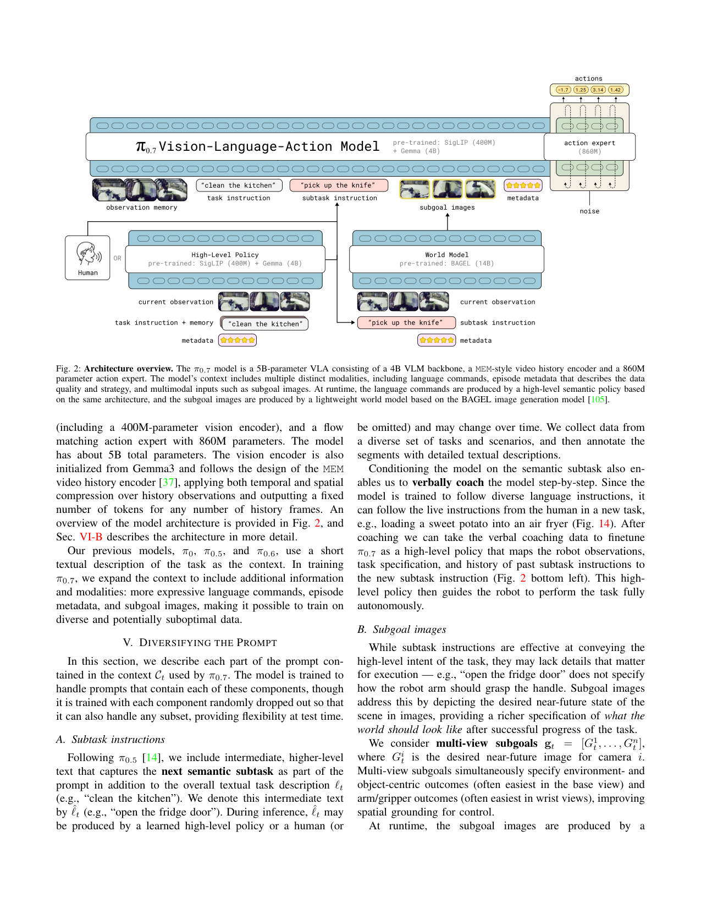
原文 caption：The π0.7 model is a 5B-parameter VLA consisting of a 4B VLM backbone, a MEM-style video history encoder and a 860M parameter action expert. The model's context includes multiple distinct modalities, including language commands, episode metadata that describes the data quality and strategy, and multimodal inputs such as subgoal images. At runtime, the language commands are produced by a high-level semantic policy based on the same architecture, and the subgoal images are produced by a lightweight world model based on the BAGEL image generation model.
全文最该看。中间 VLA:4B Gemma3 VLM backbone + MEM history encoder + 860M action expert(flow matching)。Context 输入(左上):language commands、episode metadata(quality/speed/mistake)、subgoal images。运行时(左下):high-level policy 产 subtask 指令、BAGEL 世界模型产 subgoal 图像,异步喂给 VLA。一张图同时回答:模型多大(5B)、context 有哪几路、推理时 subtask/subgoal 哪来。注意 action expert 是单独的 860M transformer,不是 VLM head。
Prompt 结构示例
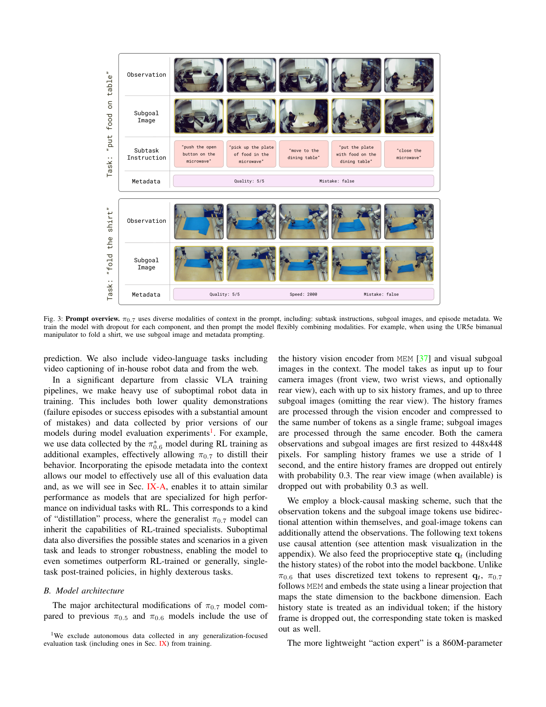
原文 caption：π0.7 uses diverse modalities of context in the prompt, including: subtask instructions, subgoal images, and episode metadata. We train the model with dropout for each component, and then prompt the model flexibly combining modalities.
两个 prompt 完整示例。例1 'put food on table':subtask 'push the open button on the microwave' → 'pick up the plate of food in the microwave' → 'put the plate with food on the dining table',配 metadata(Quality 5/5, Speed 2000, Mistake false)和 subgoal 图。例2 'fold the shirt':subtask 'close the microwave' 等。强调每个组件训练时随机 drop,推理可任意组合(如 UR5e 叠衣用 subgoal+metadata)。这张图把'context 丰富化'落到具体可读的 prompt 串。
评测机器人
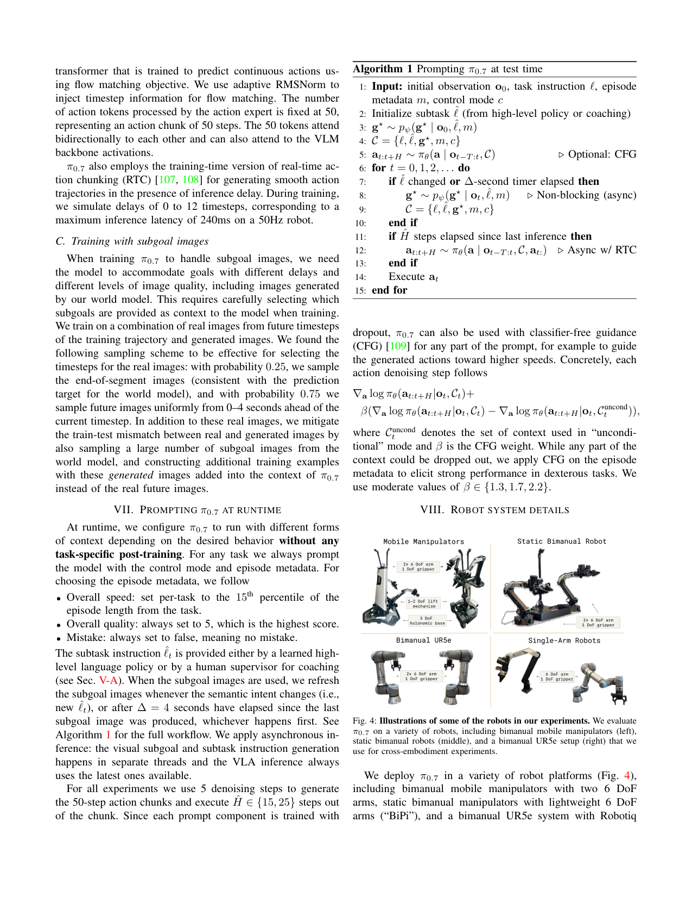
原文 caption：Illustrations of some of the robots in our experiments. We evaluate π0.7 on a variety of robots, including bimanual mobile manipulators (left), static bimanual robots (middle), and a bimanual UR5e setup (right) that we use for cross-embodiment experiments.
三类机器人平台。左:双臂移动平台(2×6DoF 臂 + 1 夹爪 + 1-2 升降 + 3 全向底盘)。中:BiPi 静态双臂(2×6DoF + 1 夹爪)。右:UR5e 双臂(2×6DoF + Robotiq 夹爪,跨本体测试用)。UR5e 比训练用的臂更长更重、形态不同、桌面侧置,是跨本体迁移的最大挑战。UR5e 20Hz,其它 50Hz。
长程任务示例
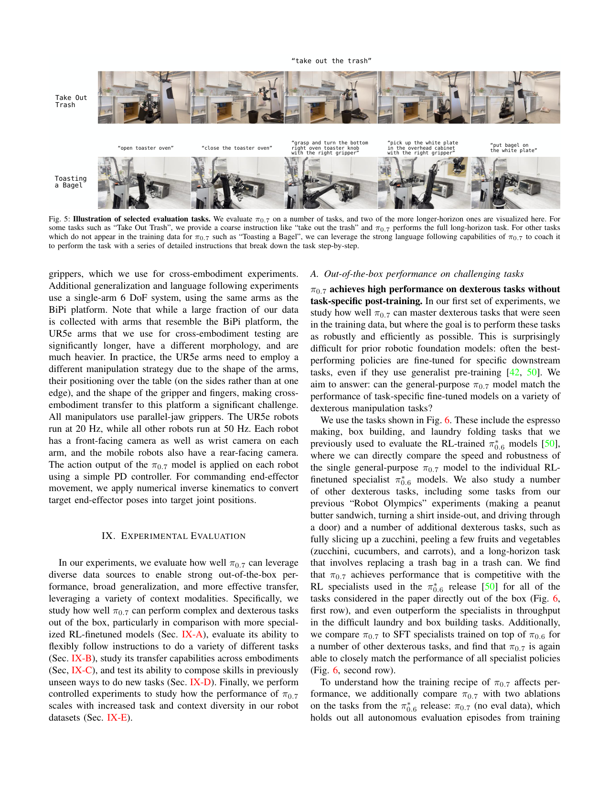
原文 caption：Illustration of selected evaluation tasks. We evaluate π0.7 on a number of tasks, and two of the more longer-horizon ones are visualized here.
两个长程任务的可视化。Take Out Trash:粗指令 'take out the trash' 自主完成全程。Toasting a Bagel:训练未见任务,靠 coaching(分步语言指令 'open toaster oven'/'grasp knob'/'pick up plate'/'put bagel on plate')完成。展示 π0.7 的两种能力:长程自主 + 语言 coaching 学新任务。
Out-of-the-box 灵巧任务
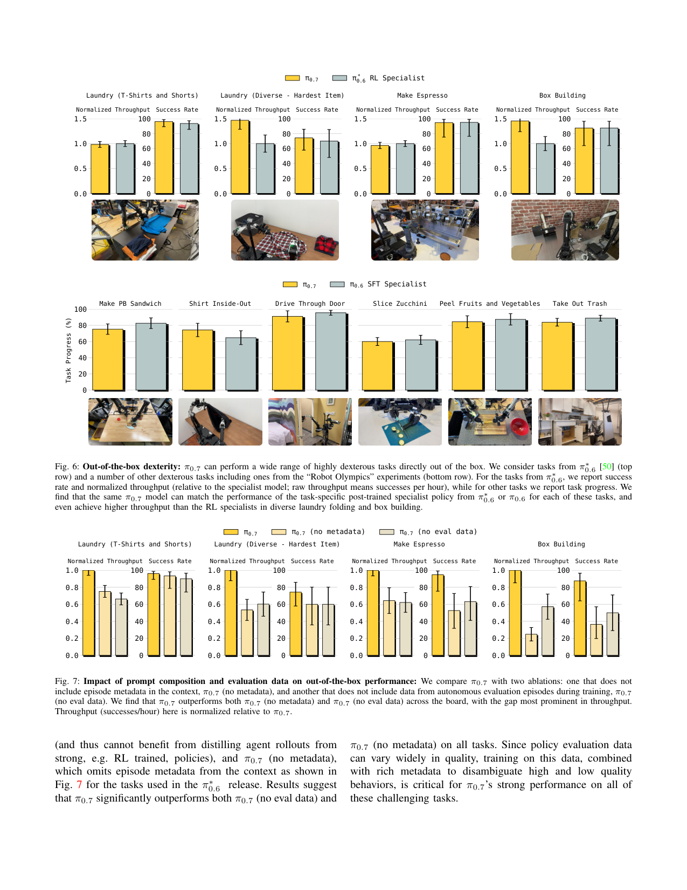
原文 caption：π0.7 can perform a wide range of highly dexterous tasks directly out of the box. We consider tasks from π*0.6 (top row) and a number of other dexterous tasks including ones from the 'Robot Olympics' experiments (bottom row).
上下两行任务。上行(π*0.6 任务):Laundry(T恤短裤 / 多样最难项)、Make Espresso、Box Building。报告 success rate + normalized throughput(相对 specialist)。下行:Make PB Sandwich、Shirt Inside-Out、Drive Through Door、Slice Zucchini、Peel Fruits/Veg、Take Out Trash,报 task progress。核心结论:同一个 π0.7 通用模型直接 out-of-the-box 匹配 RL specialist π*0.6,在 laundry/box building 上 throughput 甚至超过 specialist。
Metadata + Eval Data 消融
原文 caption：Impact of prompt composition and evaluation data on out-of-the-box performance: We compare π0.7 with two ablations: one that does not include episode metadata in the context, π0.7 (no metadata), and another that does not include data from autonomous evaluation episodes during training, π0.7 (no eval data).
三模型对比:π0.7 vs π0.7(no metadata) vs π0.7(no eval data),在 Laundry/Espresso/Box 上比 throughput + success。π0.7 全胜,gap 在 throughput 最明显。证明两件事:(1)metadata 是关键——去掉它无法区分混合质量数据;(2)autonomous eval data(含 RL specialist 蒸馏)是 specialist 性能来源。这是论文核心论点的直接消融证据。
记忆任务
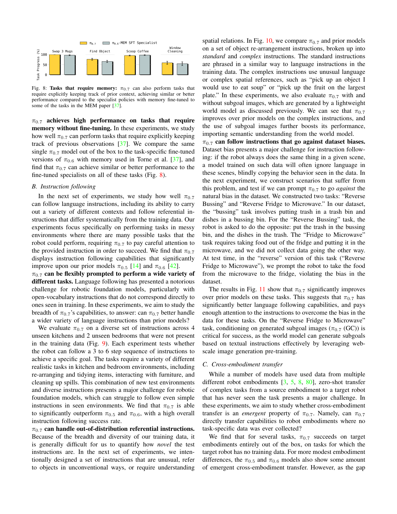
原文 caption：Tasks that require memory: π0.7 can also perform tasks that require explicitly keeping track of prior context, achieving similar or better performance compared to the specialist policies with memory fine-tuned to some of the tasks in the MEM paper.
四个需记忆的任务:Swap 3 Mugs、Find Object、Scoop Coffee、Window Cleaning。π0.7 out-of-the-box 匹配或超过 π0.6-MEM SFT specialist(后者是专门 finetune 的)。证明 MEM history encoder 让 π0.7 不 finetune 也有记忆能力——是 context 丰富化 + 架构继承的复合收益。
新环境指令跟随
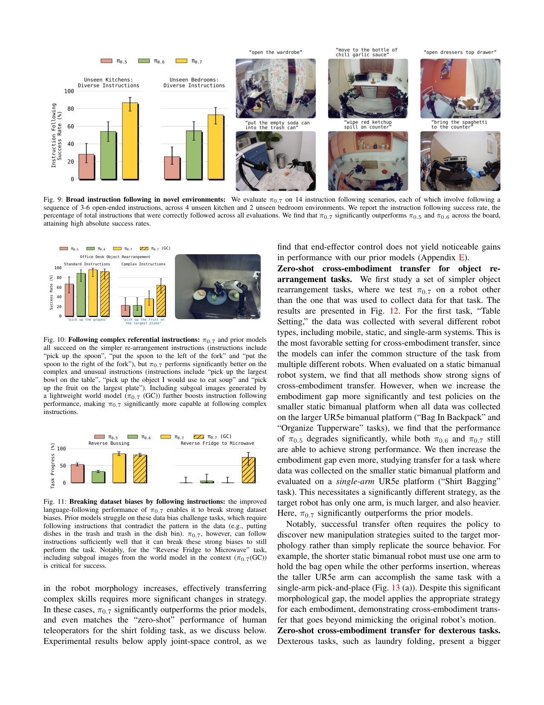
原文 caption：Broad instruction following in novel environments: We evaluate π0.7 on 14 instruction following scenarios, each of which involve following a sequence of 3-6 open-ended instructions, across 4 unseen kitchen and 2 unseen bedroom environments.
14 个指令跟随场景,每个 3-6 步开放指令,跨 4 未见厨房 + 2 未见卧室。报 instruction following success rate(正确跟随的指令占比)。π0.7 显著超 π0.5 和 π0.6,绝对成功率高。证明 π0.7 的语言跟随能力在完全未见环境也成立——不是过拟合训练环境。
复杂指代指令
原文 caption：Following complex referential instructions: π0.7 and prior models all succeed on the simpler re-arrangement instructions, but π0.7 performs significantly better on the complex and unusual instructions.
Office Desk 物体重排,分 Standard('pick up the spoon')和 Complex('pick up the object I would use to eat soup'/'pick up the fruit on the largest plate')。π0.7 在 complex 显著领先,加 subgoal image(π0.7 GC)进一步拉开。证明 subgoal image 把世界模型的语义理解注入 policy,在语言指代模糊时用视觉 disambiguate。
打破数据偏差
原文 caption：Breaking dataset biases by following instructions: the improved language-following performance of π0.7 enables it to break strong dataset biases.
两任务:Reverse Bussing(训练 bussing 是垃圾入垃圾桶+餐具入餐盘,测试要求反着来)、Reverse Fridge to Microwave(训练只单向,测试反向)。π0.7 显著超 prior,且 Reverse Fridge 任务 π0.7(GC)即 subgoal image 是成功关键——世界模型能据文本指令生成反方向 subgoal。这是'语言跟随强到能对抗数据偏差'的最强证据。
跨本体迁移
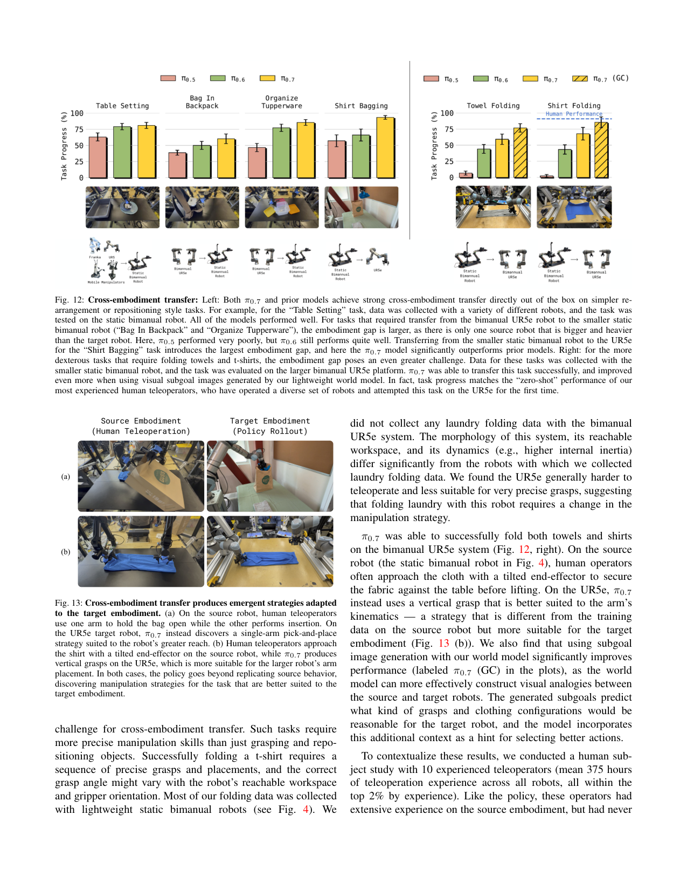
原文 caption：Cross-embodiment transfer: Left: Both π0.7 and prior models achieve strong cross-embodiment transfer directly out of the box on simpler re-arrangement or repositioning style tasks. Right: for the more dexterous tasks that require folding towels and t-shirts, the embodiment gap poses an even greater challenge.
左:简单重排任务跨本体(Table Setting/Bag In Backpack/Organize Tupperware/Shirt Bagging),embodiment gap 递增。π0.5 在大 gap 崩,π0.6/π0.7 撑住,最大 gap(单臂 UR5e)π0.7 显著胜。右:灵巧叠衣从静态双臂迁 UR5e(从未见过),π0.7 成功且加 subgoal(π0.7 GC)更好,task progress 匹配人类 teleoperator 零样本表现。这是论文最惊人的结果。
涌现策略适应本体
原文 caption：Cross-embodiment transfer produces emergent strategies adapted to the target embodiment. (a) On the source robot, human teleoperators use one arm to hold the bag open while the other performs insertion. On the UR5e target robot, π0.7 instead discovers a single-arm pick-and-place strategy. (b) Human teleoperators approach the shirt with a tilted end-effector on the source robot, while π0.7 produces vertical grasps on the UR5e.
两个对比案例。(a)装包:人类在源机器人用双臂(一扶袋一插入),π0.7 在 UR5e 单臂 pick-and-place(因 UR5e 臂长够)。(b)叠衣:人类在源机器人倾斜末端接近,π0.7 在 UR5e 用垂直抓取(更适合大臂)。关键 insight:π0.7 会为目标本体发现合适策略,而非复制源行为——这是真组合泛化,区别于模仿。
语言 coaching 学新任务
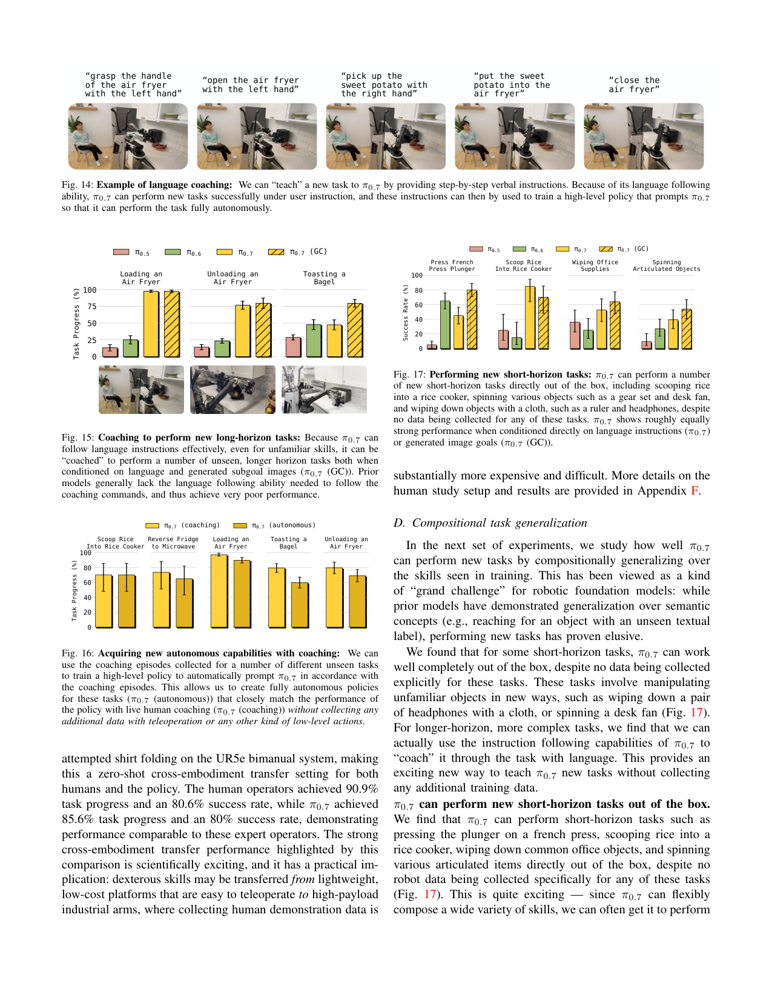
原文 caption：Example of language coaching: We can 'teach' a new task to π0.7 by providing step-by-step verbal instructions. Because of its language following ability, π0.7 can perform new tasks successfully under user instruction, and these instructions can then by used to train a high-level policy that prompts π0.7 so that it can perform the task fully autonomously.
Air Fryer 装红薯的 coaching 序列:'grasp handle'→'open air fryer'→'pick up sweet potato'→'put into air fryer'→'close'。π0.7 跟随分步指令完成未见任务。coaching 数据可训成 high-level policy 实现全自主(Fig.16)。这开启'用语言而非示教教机器人新任务'的范式。
Coaching 长程新任务
原文 caption：Coaching to perform new long-horizon tasks: Because π0.7 can follow language instructions effectively, even for unfamiliar skills, it can be 'coached' to perform a number of unseen, longer horizon tasks both when conditioned on language and generated subgoal images (π0.7 (GC)).
三任务:Loading/Unloading Air Fryer、Toasting Bagel。π0.7 vs π0.6 vs π0.5 + π0.7(GC)。prior 模型语言跟随差无法 coaching,π0.7 显著领先,GC 进一步提升。证明 coaching 是 π0.7 独有能力,prior VLA 因语言跟随弱无法用此范式。
Coaching 转自主
原文 caption：Acquiring new autonomous capabilities with coaching: We can use the coaching episodes collected for a number of different unseen tasks to train a high-level policy to automatically prompt π0.7 in accordance with the coaching episodes.
五任务:Scoop Rice/Reverse Fridge/Loading Air Fryer/Toasting Bagel/Unloading Air Fryer。对比 π0.7(coaching 人类实时指令) vs π0.7(autonomous 用 coaching 数据训的 high-level policy)。autonomous 紧跟 coaching 表现,无需额外遥操数据。证明 coaching→high-level policy 闭环成立,是新任务数据高效获取路径。
短程新任务 out-of-the-box
原文 caption：Performing new short-horizon tasks: π0.7 can perform a number of new short-horizon tasks directly out of the box, including scooping rice into a rice cooker, spinning various objects such as a gear set and desk fan, and wiping down objects with a cloth, such as a ruler and headphones, despite no data being collected for any of these tasks.
短程新任务:Press French Press Plunger/Scoop Rice/Wiping Office Supplies/Spinning Articulated Objects(gear/fan)。无任何该任务数据,π0.7 直接 out-of-the-box 完成,语言或 GC 表现相近。证明 π0.7 能组合已学技能做新短任务——compositional generalization 的直接证据。
Scaling 实验(核心 insight)
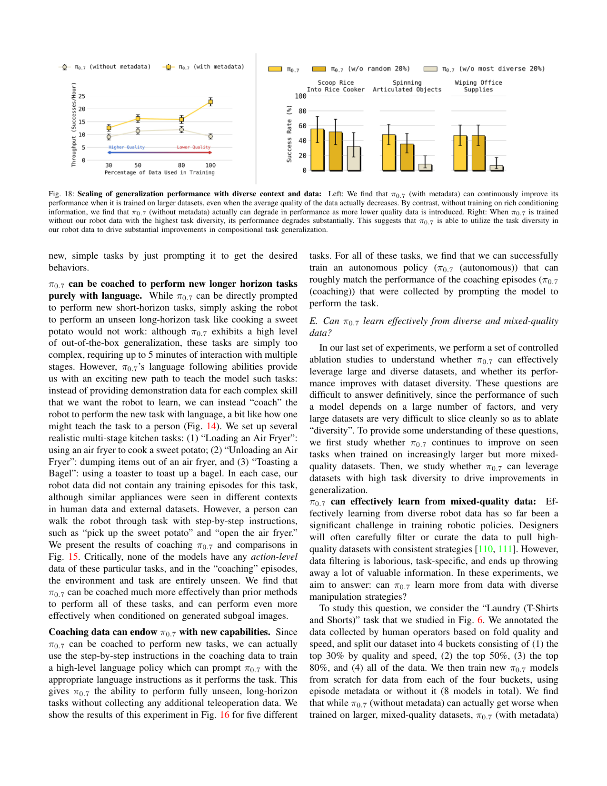
原文 caption：Scaling of generalization performance with diverse context and data: Left: We find that π0.7 (with metadata) can continuously improve its performance when it is trained on larger datasets, even when the average quality of the data actually decreases. By contrast, without training on rich conditioning information, π0.7 (without metadata) actually can degrade in performance as more lower quality data is introduced. Right: When π0.7 is trained without our robot data with the highest task diversity, its performance degrades substantially.
两张图支撑论文最核心论点。左:数据分 4 桶(top30%/50%/80%/all),π0.7(with metadata)随数据增大持续提升即使平均质量下降;π0.7(no metadata)反而变差——证明 metadata 是异质数据 scaling 的钥匙。右:去掉最高任务多样性 20% 数据,π0.7 在未见短任务上显著掉,而去掉随机 20% 不掉——证明任务多样性是组合泛化的驱动力。这张图是'context 丰富化 + 数据多样性'协同论点的决定性证据。
Attention 模式细节
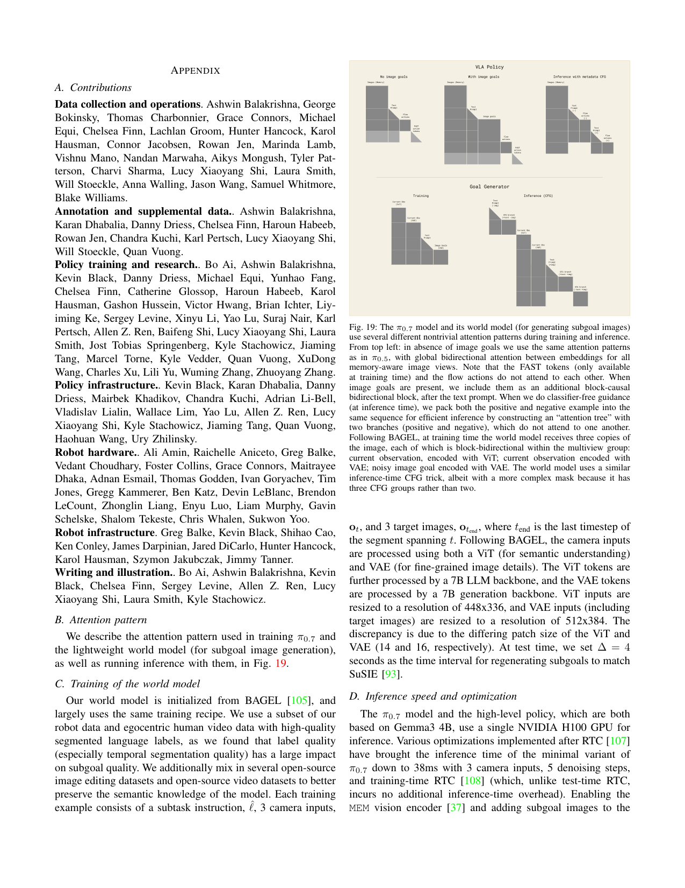
原文 caption：The π0.7 model and its world model (for generating subgoal images) use several different nontrivial attention patterns during training and inference. From top left: in absence of image goals we use the same attention patterns as in π0.5, with global bidirectional attention between embeddings for all memory-aware image views. Note that the FAST tokens (only available at training time) and the flow actions do not attend to each other.
VLA 和世界模型的 attention mask 设计。VLA:无 subgoal 时同 π0.5(memory 图像 bidirectional);有 subgoal 时加一个 block-causal bidirectional block 在 text 后;CFG 推理时正负样本 pack 成 attention tree 两分支互不 attend。世界模型:3 路图(current-ViT、current-VAE、noisy goal-VAE)block-bidirectional,3 路 CFG 比 VLA 的 2 路更复杂。这张图是 Fig.2 的 attention 细节展开,解释 block-causal mask 怎么实现。
Joint vs EE 控制
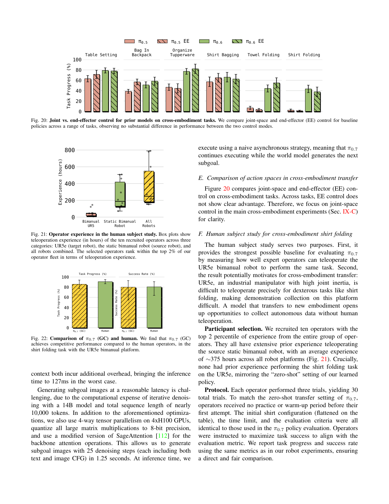
原文 caption：Joint vs. end-effector (EE) control for prior models on cross-embodiment tasks. We compare joint-space and end-effector (EE) control for baseline policies across a range of tasks, observing no substantial difference in performance between the two control modes.
Table Setting/Bag In Backpack/Organize Tupperware/Shirt Bagging/Towel Folding/Shirt Folding 六任务,π0.5/0.5EE/0.6/0.6EE 对比。结论:joint 和 EE 控制无显著差异。因此主跨本体实验用 joint 控制(更简单)。这是工程选择证据,非核心结果。
人类被试经验分布
原文 caption：Operator experience in the human subject study. Box plots show teleoperation experience (in hours) of the ten recruited operators across three categories: UR5e (target robot), the static bimanual robot (source robot), and all robots combined.
10 个 top 2% 经验操作员在 UR5e/静态双臂/全部机器人上的遥操经验箱线图。平均 ~375 小时全平台经验。关键:他们在 UR5e 叠衣是零样本(从未做过)。这是 Fig.22 人类 baseline 的可信度证据——操作员是真专家但任务零样本,和 π0.7 公平对比。
π0.7 vs 人类(叠衣)
原文 caption：Comparison of π0.7 (GC) and human. We find that π0.7 (GC) achieves competitive performance compared to the human operators, in the shirt folding task with the UR5e bimanual platform.
UR5e 双臂叠衣任务:π0.7(GC)task progress 85.6% / success 80% vs 人类 90.9% / 80.6%。π0.7 在从未训练过的本体上零样本叠衣,匹配 top 2% 经验人类操作员的首次尝试。这是论文最惊人的单点结果——工业臂上零样本灵巧任务达到人类水平。
🎧 音频版
时长 18:02 · Edge TTS
π0.7: A Steerable Generalist Robotic Foundation Model with Emergent Capabilities
2026-04-24，Physical Intelligence 的 Physical Intelligence 等人发布的论文，标题是 π0.7: A Steerable Generalist Robotic Foundation Model with Emergent Capabilities。
开场:这篇论文真正要解决什么
这篇论文要解决的核心问题非常具体:怎么让一个通用 VLA 真正用上异质混合数据——含失败、含跨策略、含 RL specialist 蒸馏、含人类视频、含 web 多模态——而不是只能用精心筛选的高质量示教。
为什么这件事难。因为 naive 训练会把不同模式平均掉。比如同一个叠衣任务,数据里有快速高质量的、有慢速犯错的、有 RL agent 跑出来的。如果你只用一条语言指令"fold the shirt"做条件,模型学到的就是这些模式的平均——产出次优行为。这就是为什么 prior VLA 必须精心筛选数据,只留高质量示教,数据多样性被锁死。
π0.7 的核心论点是:如果你给每条轨迹的 prompt 加上足够丰富的 context——不只是任务描述,还有 episode metadata(这条数据多快、质量几分、有没有犯错)、subtask 指令(下一语义子任务)、subgoal 图像(世界模型生成的近未来期望场景)——模型就能区分"这条是高质量快速执行"还是"这条是失败演示",从而把混合质量数据变成可学习的、且能在推理时通过 metadata prompting 选最优模式。
它走通了,顺带做到了一件很惊人的事:同一个通用 π0.7 模型,out-of-the-box 匹配任务专属的 RL specialist,在叠衣和搭盒子上 throughput 甚至超过 specialist;还能零样本迁移到从未训练过的 UR5e 工业臂上叠衣,匹配 top 2% 经验人类操作员的首次尝试。
它的输入和输出到底是什么
你需要在脑子里先建一个模块图。
输入有六路:多视角观测,最多 4 个相机(前视、2 腕部、可选后视),每路最多 6 个历史帧,stride 1 秒,resize 到 448×448,经 MEM vision encoder 做时空压缩;proprio,机器人关节状态含历史,linear projection 映射到 backbone 维度;task 指令 ℓ,总任务如 "clean the kitchen";subtask 指令 ℓ̂,下一语义子任务如 "open the fridge door";subgoal 图像,最多 3 路近未来期望图,由 BAGEL 14B 世界模型生成;episode metadata,speed(每 500 步分桶)、quality(1-5 分)、mistake(布尔);control mode,joint 或 ee。
输出就一路:action chunk,50 步连续动作,由 860M 的 action expert 用 flow matching 去噪生成,5 步去噪,实际执行 15 或 25 步。
输入到底怎么拼成一条序列
光说六路输入还不够具体,我把它拆成一条显式的拼接序列,你在脑子里能建出来。
序列大致长这样:开头是 <bos_obs>,里面是多视角观测加历史帧,经 MEM vision encoder 时空压缩;然后 <bos_subgoal> 包 subgoal 图像(最多 3 路);接着 <bos_lang> 是文本块,包括 task、subtask、speed、quality、mistake、control mode;再 <bos_proprio> 是 proprio state 经 linear projection;最后 <bos_action> 是 action expert 要去噪的 50 个 noisy action token。
这里有几个坑要特别说清,不然容易误解。
第一,language 和 subtask 是 causal 序列 token——后面的文本 attend 前面的,这是标准 LLM 那套。但 subgoal 图像和观测是 block-causal bidirectional——它们内部全互注意,subgoal 还能 attend 观测,但观测不 attend subgoal(未来不泄漏到当前)。所以这不是统一自回归,是混合 attention 模式。action token 也是 bidirectional 内部,而且能 attend VLM backbone 的全部 activation。
第二,多视角在观测 block 内,subgoal 也是多视角(最多 3 路,不含后视)。两者都进同一个 vision encoder,但 subgoal 可 attend 观测、反之不行。这是说 subgoal 是"对未来期望的描述",要看着当前观测来生成和解读,但不能反过来让当前观测看未来。
第三,训练和推理时这条序列长得不一样——具体是每个组件在训练时随机 drop。历史帧 30% 概率全 drop、后视 30% drop、subgoal 只在 25% 的 batch 里加(因为加了之后 action 预测退化成 inverse dynamics 太简单,多了模型反而依赖)、subtask 在有 subgoal 时 30% drop(因 visual subgoal 可替代文本)、metadata 15% 全 drop 加单字段各 5% drop。control mode 不 drop。这样模型学到的是任意 prompt 子集都能工作,推理时可灵活组合。
这个 dropout 设计是 π0.7 的隐藏杠杆——它让模型不依赖任何单一 context 组件,推理时可以根据任务选最合适的组合,比如 UR5e 叠衣用 subgoal 加 metadata。
架构:5B VLA + 860M action expert + 14B 世界模型
主干是 Gemma3 4B VLM,从预训练初始化。π0.7 的本体是 4B VLM + 400M MEM vision encoder + 860M action expert,加起来约 5B 参数。
这里有个关键设计叫 knowledge insulation。VLM backbone 用 FAST token 做离散 cross-entropy 监督——这是稳定的离散 loss。860M 的 action expert 用 flow matching 学连续动作——这是捕获动作多模态的生成式 loss。两者 loss 性质不同,直接耦合会互相干扰。所以 action expert attend VLM 的全部 activation,但梯度不回传 VLM。VLM 学稳定语义表征,action expert 在固定 backbone 上学连续动作分布。
action expert 是单独的 860M transformer,不是 VLM 的 head。它有 50 个 action token,用 adaptive RMSNorm 注入 flow matching 的 timestep,5 步去噪。内部 bidirectional 互注意,且能 attend VLM 全 activation。
推理时还有两个辅助模型。一个是 high-level language policy,同样是 Gemma3 4B 架构,负责产 subtask 指令——这个可以用 coaching 数据训成,实现全自主长程任务。另一个是 BAGEL 14B 世界模型,负责生成 subgoal 图像——SuSIE 风格,初始化自 web-scale 图像生成和编辑模型,输入当前观测加 subtask 加 metadata,flow matching 生成多视角 subgoal,3 路 CFG。
所以严格说,π0.7 不是单一端到端模型,是三模型系统:5B VLA + 14B 世界模型 + 4B high-level policy。部署时 VLA 在单 H100 上,世界模型需要 4 张 H100 做 tensor parallel。
给你一个数值 sense:这套模型到底多大
光说 5B 加 860M 可能没感觉,我把维度念细一点。
VLM backbone 是 Gemma3 4B,从预训练初始化,用 FAST token 做离散监督。MEM vision encoder 约 400M 参数,448×448 输入,做时空压缩——能把任意历史帧数压成单帧 token 数,这是它继承自 π0.6-MEM 的能力。action expert 860M,50 个 action token,adaptive RMSNorm 注 timestep,5 步 flow matching 去噪。
分辨率上,观测和 subgoal 都 resize 到 448×448。世界模型那边更复杂:ViT 走 448×336(patch 14),VAE 走 512×384(patch 16),因为 ViT 和 VAE 的 patch size 不同。粗算每视角约 1024 个 patch token,6 个历史帧 × 4 视角经 MEM 压到单帧 token 数。
action chunk 是 50 个 token,执行 15 或 25 步。训练时用 training-time RTC(real-time chunking)模拟 0 到 12 步延迟,对应 50Hz 机器人上最大 240ms 推理延迟——这是为了保证轨迹平滑,即使推理有延迟也不卡顿。
控制频率上,UR5e 跑 20Hz,其它机器人 50Hz。机器人形态多样:双臂移动平台是 2×6 自由度臂 + 1 夹爪 + 1-2 升降机构 + 3 自由度全向底盘;BiPi 静态双臂是 2×6 自由度 + 1 夹爪;UR5e 双臂是 2×6 自由度 + Robotiq 夹爪。UR5e 比训练用的臂更长更重、形态不同、桌面侧置,是跨本体迁移的最大挑战。
推理速度,最小变体 38ms——3 个相机、5 步去噪、training-time RTC(无额外推理开销)。开启 MEM vision encoder 加 subgoal image 到 context,最坏 127ms。世界模型生成一张 subgoal 要 1.25 秒,25 步去噪,在 4 张 H100 上做 tensor parallel,矩阵乘法 8bit 量化,attention 用 SageAttention 优化。但这个 1.25 秒不阻塞 VLA,异步执行——VLA 继续跑,世界模型在后台生成下一个 subgoal。
CFG 用在 metadata 上,β 取 1.3、1.7 或 2.2,引导动作朝高质量、快速、无错误的模式走。
真正让 π0.7 成立的:context 丰富化使数据 scaling 成立
这是论文最核心的论点,我必须单独讲。
π0.7 做了一个决定性实验(Fig.18 left)。它把叠衣数据按质量和速度分 4 桶:top 30%、top 50%、top 80%、全部数据。然后分别训 π0.7 with metadata 和 π0.7 without metadata。
结果非常打脸 naive 直觉。π0.7 with metadata 随数据增大持续提升,即使平均质量在下降——因为 metadata 让模型能区分好坏模式,坏数据也能学。π0.7 without metadata 反而越大数据越差——因为没标注的坏数据被平均进来,污染了模型。
这意味着什么。意味着 metadata 不是装饰,是异质数据 scaling 的钥匙。没有它,数据越多越烂;有它,数据越多越好,即使质量下降。这把数据获取从"精心筛选高质量示教"变成"来者不拒靠 metadata 标注",成本数量级下降。
第二个实验(Fig.18 right)进一步证明数据多样性 > 数据质量。去掉最高任务多样性的 20% 数据,π0.7 在未见短任务上显著掉;而去掉随机的 20% 不掉。这证明组合泛化的驱动力是任务多样性,不是单纯数据量。
这两个实验合起来就是 π0.7 的核心论点:context 丰富化 + 数据多样性协同,才能让通用 VLA 真正泛化。缺一不可。
一个最值得记住的 insight:通用模型可蒸馏 specialist
π0.7 做了一件很反直觉的事。它把 autonomous eval data——就是策略评测时收集的数据,包含 π0.6 RL 训练 agent 的 rollout 和失败 episode——大量混进训练。靠 episode metadata 区分质量。
结果是 π0.7 out-of-the-box 匹配 RL specialist π*0.6,在叠衣和搭盒子上 throughput 甚至超过 specialist(Fig.6)。Fig.7 消融证明:π0.7 no eval data 在 throughput 上显著掉——说明 specialist 性能确实来自这些 autonomous rollout 的蒸馏。
这个 insight 分量很重。它意味着通用模型可以蒸馏多个 specialist 进自身,且 metadata 让蒸馏不污染通用性。你不需要为每个灵巧任务单独 RL 训一个 specialist,一个 π0.7 通用模型 out-of-the-box 就行。这是通用 VLA 路线对"每任务 RL"范式的直接挑战。
跨本体迁移:不只是迁移,是涌现新策略
π0.7 最惊人的结果是跨本体叠衣。叠衣数据全部在静态双臂上收集,从未在 UR5e 上训过。但 π0.7 在 UR5e 双臂上零样本叠衣,task progress 85.6%、success 80%——匹配 10 个 top 2% 经验人类操作员在 UR5e 上的首次尝试(90.9% / 80.6%)。
但更深的 insight 在 Fig.13。π0.7 不是复制源机器人的行为。源机器人是人类用双臂——一臂扶袋一臂插入;π0.7 在 UR5e 上用单臂 pick-and-place,因为 UR5e 臂长够。源机器人人类用倾斜末端接近布料;π0.7 在 UR5e 用垂直抓取,更适合大臂的运动学。
这说明 π0.7 学到的是"理解任务目标后为目标本体发现合适策略",而非"模仿源轨迹"。这是真组合泛化,区别于模仿。这个结果指向一个实用价值:灵巧技能可以从轻量低成本平台(易遥操)迁移到高负载工业臂(难遥操),大幅降低示教成本。
语言 coaching:用语言而非示教教新任务
π0.7 的语言跟随能力强到一个新程度——可以被人分步指令 coaching 完成未见长程任务。比如 Air Fryer 装红薯,人一步步说"抓把手""开盖""拿红薯""放进去""关上",π0.7 跟着做。
更妙的是,这些 coaching 数据可以训一个 high-level language policy(同 Gemma3 4B 架构),把"观测加历史 subtask→新 subtask"学下来。推理时这个 high-level policy 自动产 subtask 指令喂给 π0.7,实现全自主。Fig.16 证明 π0.7 autonomous 紧跟 π0.7 coaching 表现,无需额外遥操数据。
这开启一个范式转变:新任务的数据获取从"收集示教轨迹"降到"人用语言分步指挥几次"。成本数量级下降。prior VLA 因为语言跟随弱,根本无法用这个范式——Fig.15 显示 π0.5/π0.6 在 coaching 任务上几乎全失败。
关键结果:挑几个有对照的数字
我挑几个有对照的。
Out-of-the-box 灵巧任务:同一个 π0.7 通用模型直接 out-of-the-box 匹配 RL specialist π*0.6,在 laundry 和 box building 上 throughput 甚至超。这是通用模型蒸馏 specialist 的实证。
未见环境指令跟随:14 个场景 × 3-6 步开放指令,跨 4 未见厨房 + 2 未见卧室。π0.7 显著超 π0.5 和 π0.6,绝对成功率高。证明语言跟随在完全未见环境成立。
打破数据偏差:Reverse Fridge to Microwave 任务(训练只单向,测试反向),π0.7(GC)成功,prior 全失败。subgoal image 是关键——世界模型能据反方向文本生成 subgoal。这是"语言跟随强到能对抗数据偏差"的最强证据。
跨本体叠衣:UR5e 零样本 task progress 85.6% / success 80%,人类 top 2% 操作员首次尝试 90.9% / 80.6%。工业臂上零样本灵巧任务达到人类水平。
Scaling with metadata:π0.7 with metadata 数据越大越好(即使质量降),without metadata 越大越差。metadata 是异质数据 scaling 的钥匙。
局限:别替它过度外推
论文自己承认的:零样本泛化成功率(60-80%)低于 in-distribution(>90%),seen 和 unseen 任务/本体组合有差距;在如此大且多样的数据上,很难确定哪些任务真正 seen vs unseen,数据里可能含相关技能(不同标签或作为其他任务一部分),generalization 可能主要是 remixing 已见技能;context 丰富化依赖 episode metadata 标注质量,speed 是 GT 但 quality 和 mistake 是人工粗标,标注成本未量化。
我们读出的:π0.7 实际是三模型系统(5B VLA + 14B 世界模型 + 4B high-level policy),不是端到端单模型,部署需多卡,世界模型要 4×H100;subgoal 只在 25% batch 加训练,推理时若 always 用 subgoal 可能与训练分布有 mismatch,论文未给 always-subgoal 消融;跨本体叠衣匹配人类是单任务单本体(UR5e)且人类也是零样本首次尝试非最佳表现,泛化到更多本体或更难任务是否仍成立未证;coaching 范式依赖人类实时分步指令,high-level policy 需 coaching 数据训练,完全自主长程新任务仍需先收集 coaching 数据,不是完全 zero-data。
所以,π0.7 是 VLA 路线组合泛化的一个强证据,但它支持的是"context 丰富化 + 数据多样性协同"这个方法论,不等于所有场景都能靠 prompt 解决——它依赖高质量 metadata 标注和大量异质数据,这是它的隐形门槛。
一句话收束
π0.7 是一个 5B VLA,靠把 episode metadata、subtask 指令、世界模型生成的 subgoal 图像塞进 prompt,让模型能区分混合质量数据的不同模式,从而把含失败、含 RL specialist 蒸馏的异质数据训成一个会组合泛化的通用 policy。它最有力的论证是 Fig.18,而非某个跑分——没有 metadata 数据越大越差,有 metadata 数据越大越好,即使质量下降。这把数据获取从"精心筛选"变成"来者不拒靠标注",是 VLA 数据方法论的一次实质升级。